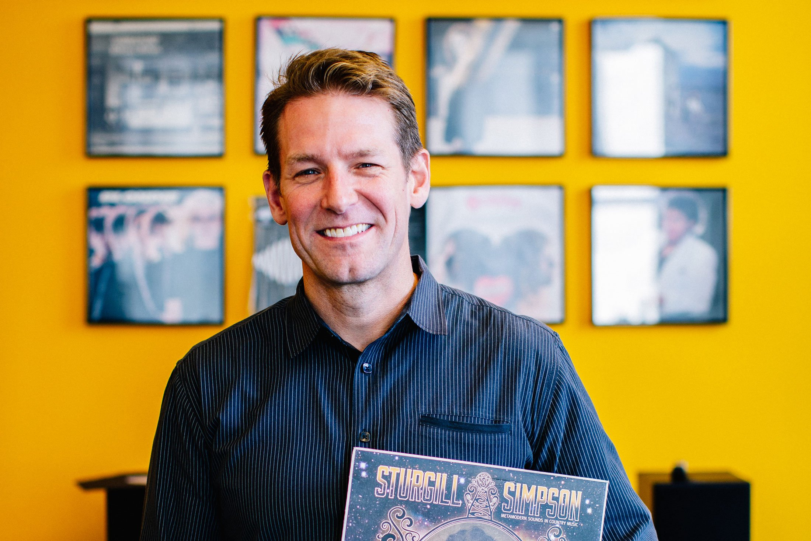

This time of year—in Chicago, at least—beautiful, tiny things abound. The buds on the trees. The wildflowers peeking out of the soil. A bird enjoying a puddle after the rain. My four-year-old likes to go for walks in our neighborhood to track the growth of all our neighbors’ flowers. A carpet of little purple ones over there! Tall, vibrant yellow ones over here! Though it’s often the humble dandelion that inspires the most delight. I cherish this perspective and the opportunity she gives me to look closely at the little things, consider them from a new angle, and delight in the minutiae.
Below, we share some tiny, beautiful things we’re enjoying—both literally, as in the show starring Kathryn Hahn, and not, as in some perfectly caramelized tofu (yes, even tofu can be beautiful).

More tiny, beautiful things that bring us joy

Tiny Beautiful Things, starring Kathryn Hahn and streaming now on Hulu, is a powerful and emotional journey through the complexities of human relationships and the struggles we all face in life. Based on the book by Cheryl Strayed, the show follows Hahn’s character, Clare, as she takes over for a friend as the advice columnist Dear Sugar and responds to letters from people seeking guidance on a wide range of issues. Hahn delivers a brilliant performance, bringing depth and nuance to Sugar’s responses, which are always compassionate, honest, and thought-provoking.
Karen Henrie
senior editor
Go to Karen’s pick

Chez Jorge, aka George Lee, started sharing his easy vegan Taiwanese and Asian-inspired food during the pandemic, and I’ve been salivating ever since. Even as an omnivore, I go to his recipes for meal inspo, particularly his Three Cup Tofu, the secret to which is freezing and thawing the tofu twice to get big, craggy, toothsome hunks. (I always forget to thaw the second time but have found once also works just fine.) The dish’s sauce is sweet, sticky, salty, and highly addictive. Even my four-year-old is a fan—which is saying something for a kid who typically only wants to eat marshmallows and ice cream.
Take a peek at George’s website and find your favorite recipe (hint: it might be the Frozen Baked Sweet Potato), and watch for his book, Vegan Taiwanese Food, coming out in Spring 2024.

Go to Lys’s pick
Lys Sorresso editor
Scott Leff
founder
In 1997, three white men nearly beat to death a 13-year-old Black boy who ventured into Chicago’s Bridgeport neighborhood. In the seven-part podcast, You Didn’t See Nothin, from the Invisible Institute, journalist Yohance Lacour revisits how the incident and its aftermath cast a long shadow on everyone involved, including himself. The story is a time capsule of the city in the 1990s and succeeds by being intensely specific and universal at the same time. This one will stick with you.
Go to Scott’s pick

I discovered the pilates blogger Cassey Ho in my dorm room in college. I love her YouTube channel because she offers workout videos for everyone—whether you’re looking to focus on a particular goal or just want to squeeze in a quick 10-minute workout before work. And a lot of her videos don’t require any equipment. She also comes up with cute fitness calendars and healthy recipes like banana pancakes.
Go to Tiana’s pick
Tiana Pigford marketing manager


Mimi:
Doing a chore
for the length of the song “Cruel Summer”
Lys:
Wiley Wallaby red licorice
Alia:
Reading books with my toddler
Morgan:
Mom’s matzah
ball soup
1
The Invisible Institute is a client of Leff.
1